LeaCon II — Organizing Committee Applications
Lead. Experience. Build.
Organizing
Committee
Applications
AIESEC in Saegis · Term 26.27
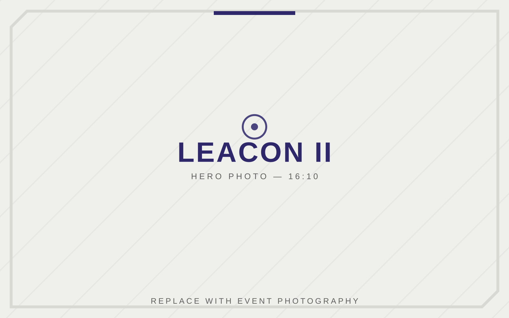
About LeaCon
A seminar built to grow leaders.
LeaCon is a Leadership Development Seminar designed to empower individuals with the skills and mindset needed to grow as impactful leaders.
Through guided sessions, field challenges and real team responsibility, delegates leave with more than notes — they leave with practice. Last year’s seminar set the standard. The Organizing Committee of LeaCon II is how we take it further.
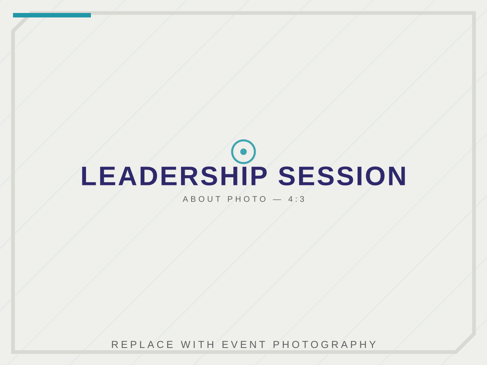
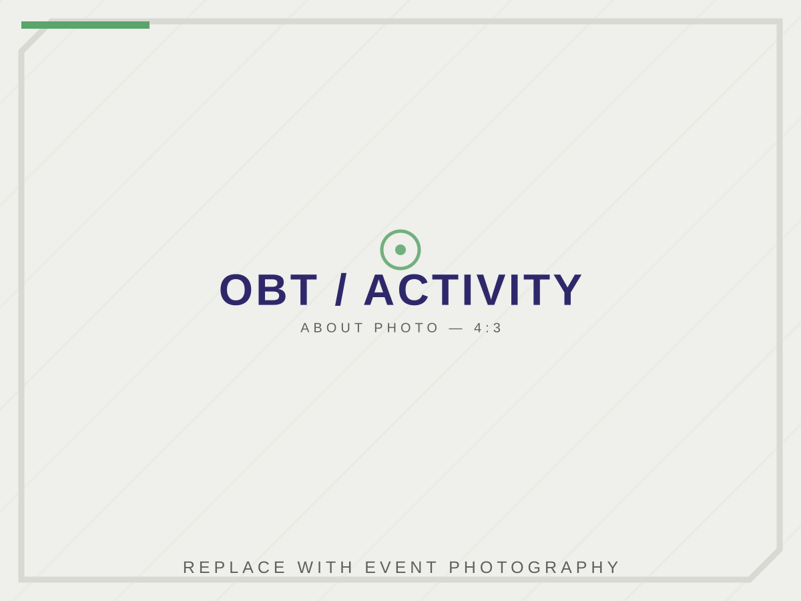
In motion
LeaCon in motion.
Before you apply, see what the room actually looks like — sessions, challenges, delegates and the team behind the schedule.
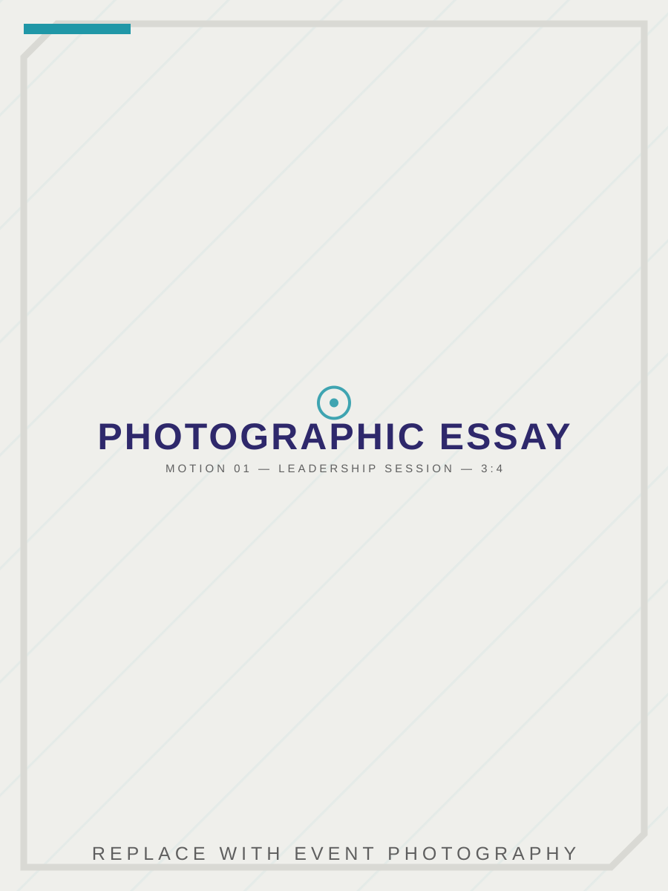
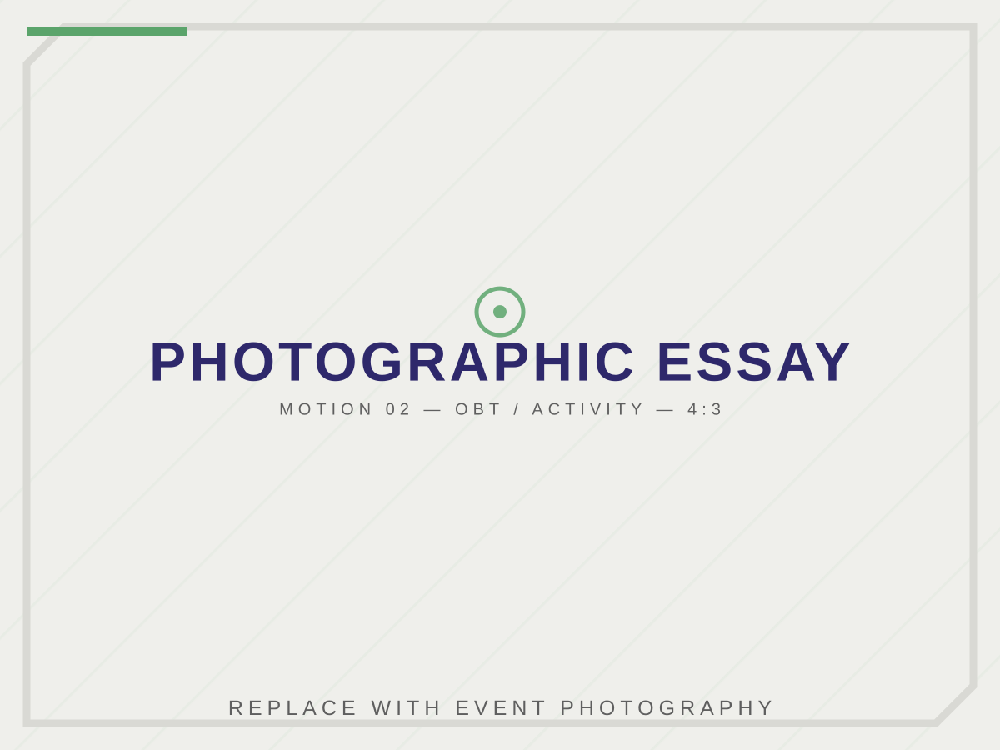
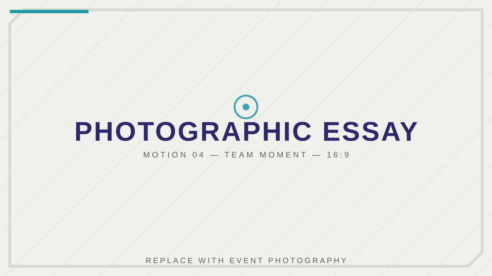
Why join the OC
Why build LeaCon II.
Six reasons this is worth your term — written the way we mean them.
-
Lead from the front
Own your part of LeaCon II from first idea to final delivery, and watch your decisions shape what hundreds of people experience.
-
Build a real event
Turn budgets, venues, campaigns and logistics into a leadership seminar that people remember long after it ends.
-
Work across functions
Coordinate with partnership, marketing, logistics and delegate teams — and learn how an event genuinely comes together.
-
Develop professionally
Gain hands-on practice in planning, communication, leadership and accountability — guided by AIESEC leadership, not left to chance.
-
Create delegate experiences
Design the sessions, moments and recognition that delegates will carry with them beyond LeaCon II.
-
Leave a measurable impact
Leave behind stronger leaders, a proven event and a legacy you can point to with pride.
OC structure
One team. Four functions. Twelve roles.
The OCP leads the committee end to end. Four OCVP functions deliver the work — and every role connects back to the event’s success. Select a role to read the full brief.
OCVP Partnership Development, Marketing and Events & Logistics work under the OCP with their respective Event Managers. OCVP Delegates reports directly to the OCP — it is not placed under Partnership Development.
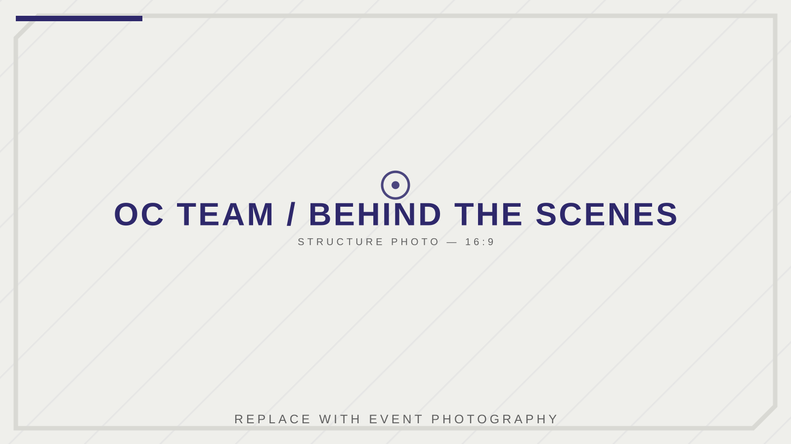
OC roles
Choose your role.
Five roles, one event. Each brief covers responsibilities, what you’ll learn, working style and the people you’ll work with.
Read the expectations and policies before you choose — they apply to every role.
Expectations · PoliciesOC expectations
What we expect.
Twelve standards that apply to every member of the Organizing Committee — regardless of role, function or workload.
-
Commitment & responsibility
Once you join, you own your part of LeaCon II. Deliver what you promise, on time, even when it is inconvenient.
-
Team collaboration
No role succeeds alone. Share context, support other functions and put the event’s success above your own silo.
-
Proactive problem-solving
Anticipate issues before they appear, and bring possible solutions to the table — not just problems.
-
Professionalism
Represent LeaCon II and AIESEC in Saegis in every message, meeting and decision you make.
-
Time management
Balance academics, LC commitments and OC deadlines through planning — not last-minute effort.
-
Creativity & innovation
Bring fresh ideas to sessions, promotion and delegate experience — improve on what worked before, don’t copy it.
-
Attention to detail
From spell-checked mailers to counted stationery — small details decide how professional the event feels.
-
Continuous learning
Ask for feedback, reflect after every meeting and keep improving your function as the event approaches.
-
Ownership
Treat your tasks as yours end to end: initiate, follow up and close the loop without being chased.
-
Ethical conduct
Handle budgets, partners and delegate data honestly. The LeaCon name depends on how we act.
-
Effective communication
Communicate early, clearly and through the defined hierarchy — silence creates more work for everyone.
-
Passion & enthusiasm
Energy is contagious. Care visibly about LeaCon II, and delegates and teammates will too.
OC policies
Non-negotiables.
These policies apply to every accepted member of the Organizing Committee. Read them carefully — you will be asked to accept them before submitting an application.
No member is allowed to withdraw or resign halfway through LeaCon II. Consider your availability carefully before applying.
OC members should attend and actively participate in OCMs, OC × MBMs and OC × EM meetings. If unable to attend, inform the responsible parties in advance.
Unresponsiveness to the OCP, Event Managers or relevant leadership — and disregarding assigned tasks — will not be accepted.
All members should work as a team and help each other attain the event’s goals and objectives.
Communication should follow the defined hierarchy. Concerns should be communicated to the OCP and Event Managers through the proper channels.
Photography
Last year at LeaCon.
moments we still talk about
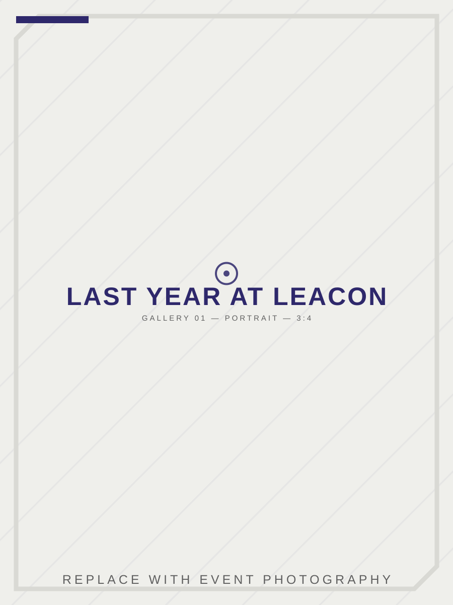
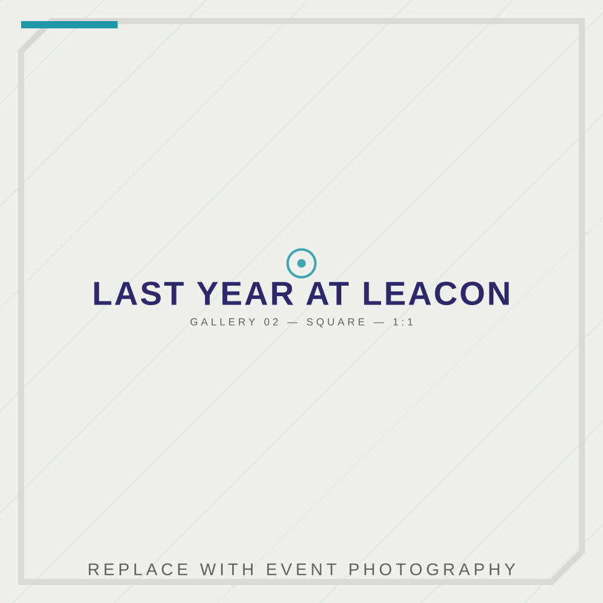
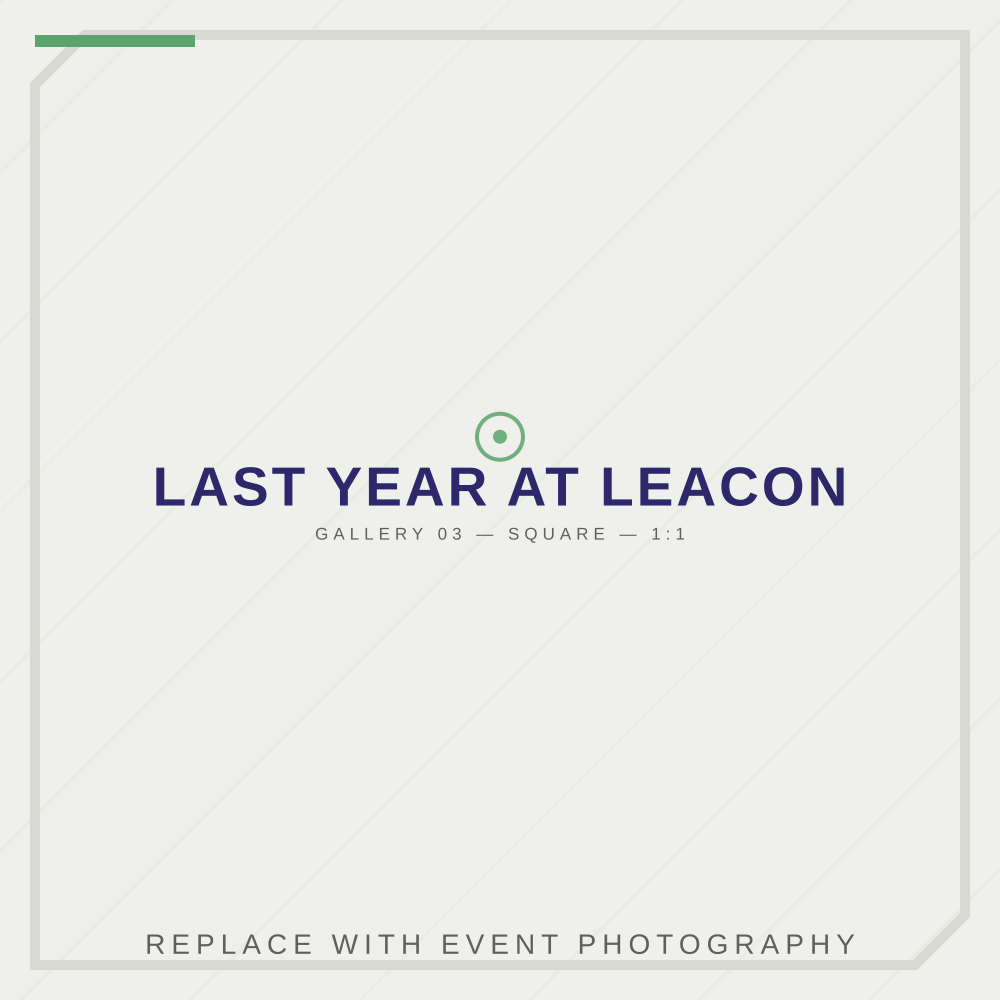
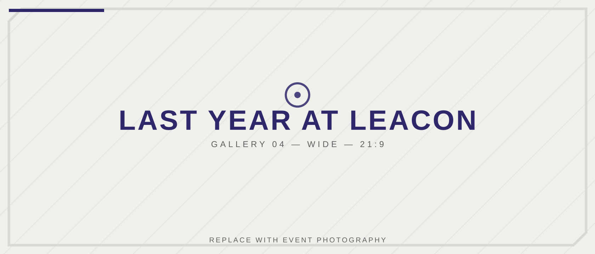
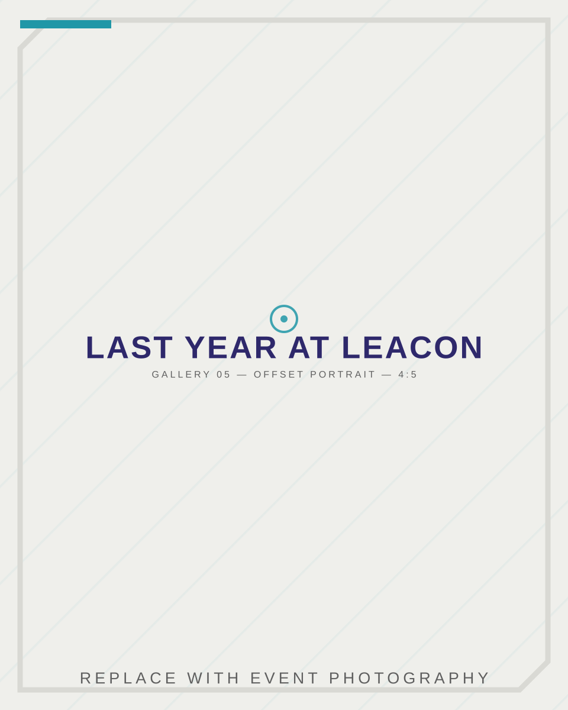
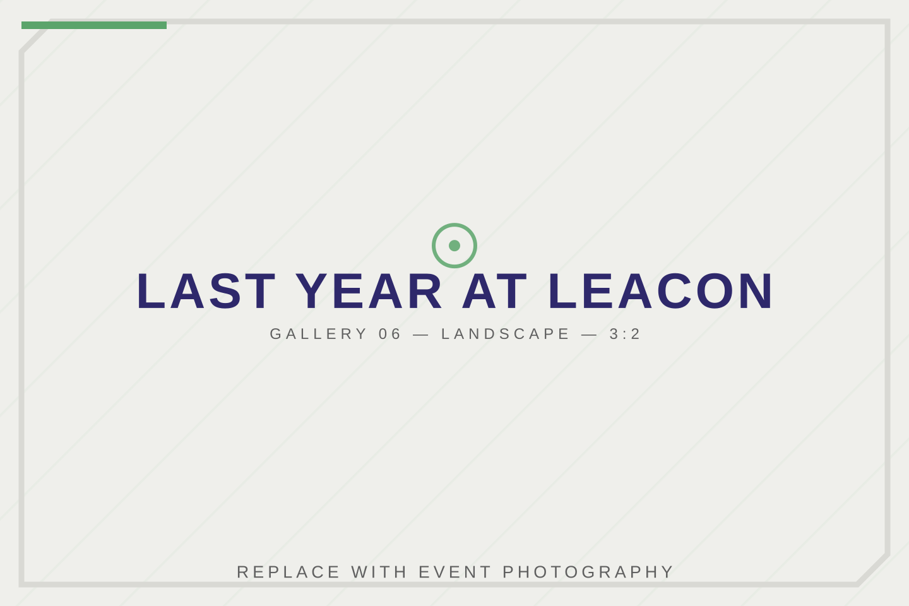
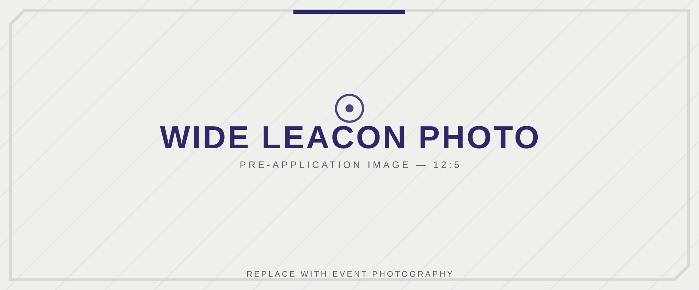
Applications
Ready to build LeaCon II?
Five steps: basic information, experience & motivation, role preferences, a professional photo, and a final review. Read the briefs, then apply with intention.
Contact
Talk to a human.
Questions about roles, deadlines or the process? Reach out before you apply — a real person from the team will answer.
Official contacts confirmed before applications close.